把耳朵貼近地方
這一頁從一間種苗店看見一條街的轉身。菜苗、種子、肥料與老闆的種植經驗，不只是買賣，也是新店曾與農事、山路和市場相連的生活記憶。
紀錄者
侯淑敏
紀錄類別 （可複選）
▅人物（對象名稱〆張豐鏡）▅商店（類別種苗行） □老樹□老建築 □自然景點 □特色景觀 □史蹟 □其他（ ）
所在位置
地址 231新北市新店區張南里北宜路一段50號
紀錄摘要
早期光明街附近（今北宜路一段）的「菜苗街」
新店光明街附近早期是新店地區最重要的商業與交通樞紐，其菜苗與種子生意主要受惠於周邊發達的農業活動與便利的交通運輸。
（一）早期商業與農業背景
交通匯聚地：光明街曾是新店渡、萬新鐵路新店站與北宜公路起點的匯合處。在 1990 年代捷運通車前，這裡是木材、煤礦與農產品運往外地的集散地
農業需求支撐：早期新店與鄰近的烏來、三峽、石碇地區農業、林業與礦業發達。墾民與農戶需在入山前補充物資，因此光明街周邊發展出包含五金行、雜糧行及農會在內的完整農業服務鏈
（二）菜苗與種子店分布
雖然光明街現今以美食商圈著稱，但其周邊（特別是銜接的北宜路一段）至今仍保留著密集的「栽仔行」（種苗店），形成一個歷史悠久的農資聚落。
聚落地點：主要集中在靠近新店捷運總站的北宜路一段一帶，這裡曾是北宜公路的出入口，方便農民載運種苗回山區種植
代表性店家：
張豐鏡種苗店：位於北宜路一段 50 號，販售各類當季蔬菜種苗、果樹與種子，是當地知名的老字號。
菜苗 8 新店（菜苗8農耕材料便利店）：位於北宜路一段108 號，以超市型態經營，提供豐富的蔬菜、花草種苗及肥料資材，許多農友會在此交流種植技巧 。
新店地區農會農民購物中心：位於光明街 61 號，為在地小農提供便利的農業品採買，維持著深厚的鄉土感情 。
萬元種子農藥行：早年登錄於新店路 189 號，與光明街、新店老街商圈共同構成早期的農業服務圈。（據茂發雜糧行老闆所言：歇業已有十年之久，此店址變成「三峽黑豬肉」）
無名菜苗店：北宜路一段134號，沒有商店名稱，只有斗大的紅色「菜苗」兩字。深受當地人喜愛的店家，主要販售當季菜苗與自家放養雞蛋。
（三）生意型態的演變
從專業農用到休閒園藝：早期顧客多為賴以維生的專業農戶，大袋收購種子。隨著城市化發展與觀光進駐，現在則轉向以「興趣導向」的散客、盆栽種植與在地居民為主。
服務特色：老店老闆多半具備「蔬菜顧問」的功能，會教導客人「一個洞放幾顆種子」或「種植前是否需泡水」等專業知識，這是傳統種子行傳承至今的經營特色
（四）張豐鏡種苗店
介紹張豐鏡：自幼跟隨其父耕種二十餘年，期間曾從事油漆、裝潢工作，直至體能不堪負荷，才繼承家中種苗生意，至今已三十年。早年老家、耕種在塗潭仔自來水廠附近，張家種苗店舖輾轉換過兩個地方，第一個約在今捷運新店總站附近，後來又移到國校路，最後移到目前的第三處店鋪：北宜路一段 50 號。
1. 自家網路介紹：本店是新店在地經營30年之種苗零售商家，自五十年前張王月里自耕自種，在新店市場擺攤販賣，後由張豐鏡承接，並於三十年前開始增加菜苗及種子的批發零，認為「民以食為天」應仍又商機。
售。現因應網路時代到來，開設FB粉專更方便於溝通，還請舊雨新知大家告訴大家。FB中也不定時分享店內商品資訊，在粉絲專頁一起討論、分享、交流、詢問。
2.網路介紹他：位於新店區北宜路一段 50 號的商家正式名稱為「張豐鏡種苗店」（或稱張豐鏡菜苗店），是一家在地經營數十年的老牌種苗零售商。該店鄰近新店捷運總站，步行約 3分鐘即可到達。
3. 商家基本資訊
- 地址：新北市新店區北宜路一段 50 號。
- 營業時間：每日 07:00 – 18:00。
- 販售項目：當季蔬菜種子、菜苗（如瓜類、茄子、辣椒等）、果樹植栽、肥料及
4. 店家特色：
- 歷史悠久與評價與口碑：
在 Google 地圖上擁有 4.7 顆星的高評價，顧客普遍反映菜苗品質佳、種類眾多，且老闆服務親切並具備專業種植知識。
口訪張豐鏡：
這段對話圍繞著傳統農業轉型與耕作智慧傳承，張先生探討了隨著時代變遷，農業環境從過去的大規模農田轉向當前的精緻化與轉型開發，並特別強調不可過度依賴單一肥料，而應整合多方實務經驗與觀察天氣的自然律動。他分享了對抗人性中「懶與難」的職業態度，同時提到台灣農業技術如穴盤育苗與經濟作物的國際競爭力。整體而言，這反映了在地老店如何在都市化與氣候變遷的挑戰下，透過專業技術與謙遜心態守護食為天下的農耕文化。
以下是張豐鏡種苗店隨時代轉型的幾個關鍵面向：
1. 客戶群體與種植規模的轉向：從大農到小農與園藝愛好者、因應都市化發展
2. 經營哲學與「大數據」思維：吸取群眾智慧、將客人視為研發來源
3.種植技術與專業建議的精進：因應環境與天氣變化、針對都市空間的專業化
4. 銷售與通路模式的改變：網路資訊的整合、代購與服務的延伸
總結來說，這家種苗店的轉型並非全盤數位化，而是將傳統種苗技術與現代園藝需求結合，從單純的「賣苗」轉向提供「種植解決方案」，並在都市化的浪程中，將經營重心從生產導向轉為服務與知識導向。
左一：1. 張豐鏡種苗店
左二：張老闆推送肥料到客人車上
左三：店面正照
左四：4. 萬元種子農藥行
中一：店老闆張豐鏡
中二：薄利且辛苦錢難賺
中三：新屋鄉或中部送來的菜苗
中四：2. 菜苗 8 新店（菜苗8農耕材料便利店）
右一：老闆娘張大嫂溫柔耐心向顧客解說
右二：肉豆
右三：3. 新店地區農會農民購物中心
右四：5. 無名菜苗店
光影也替地方作證
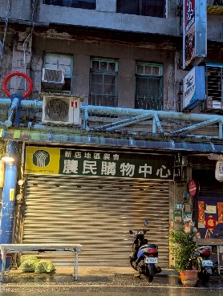
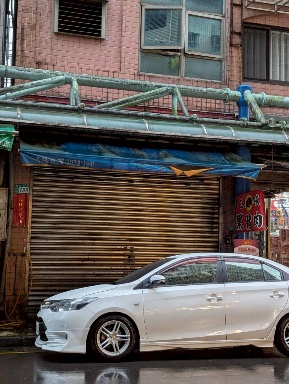
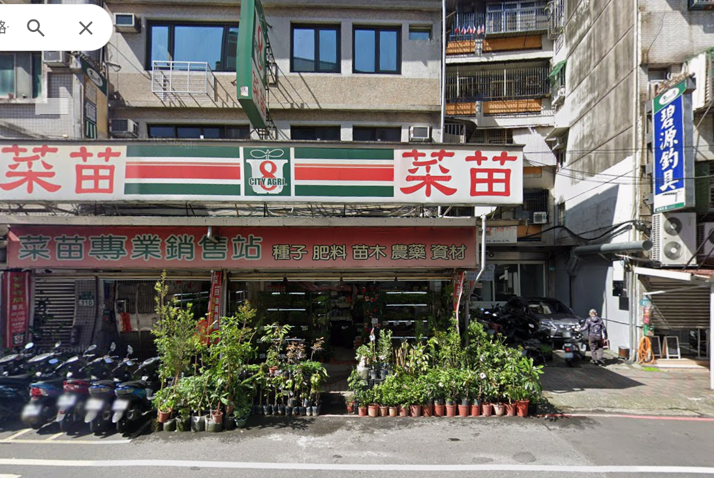
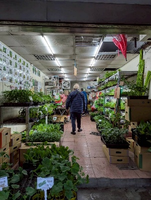
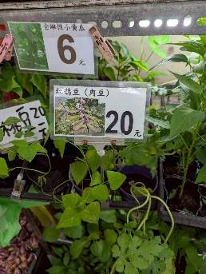
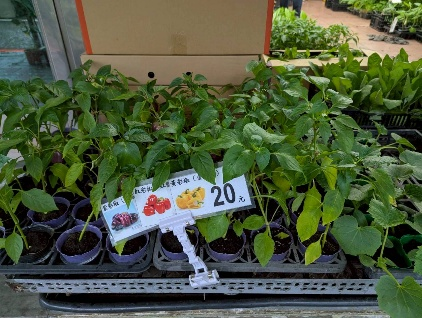
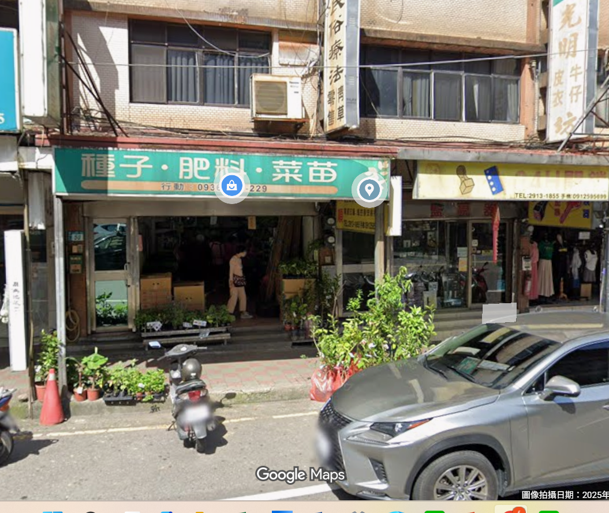
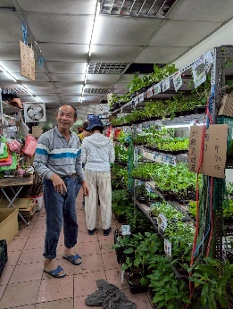
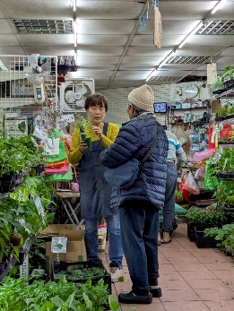
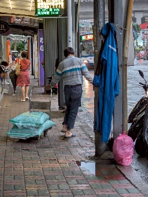
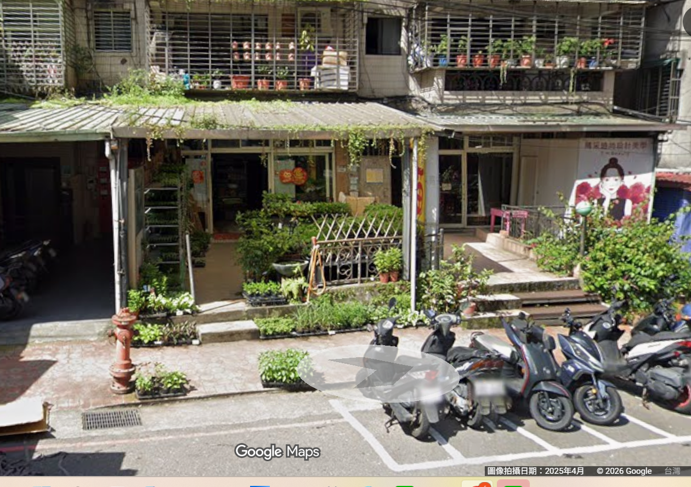